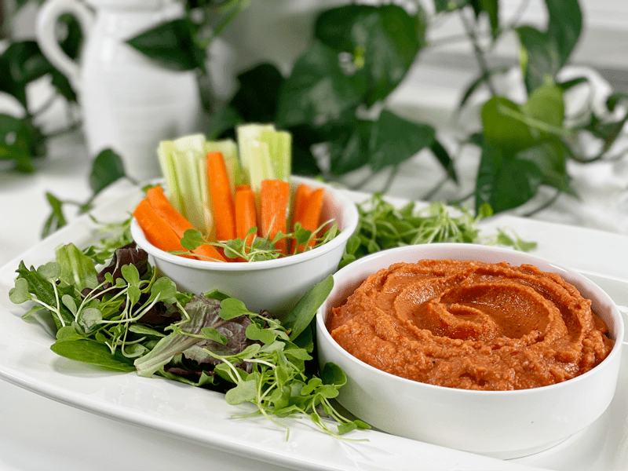
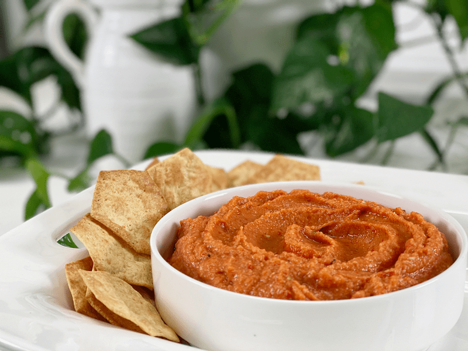

Roasted Red Bell Pepper Hummus | Oil-Free | Tahini-Free
After falling in love with how easy it is to make hummus at home, I decided to play around with some of my favorite hummus flavors. Smoky and sweet sums it up for this silky-smooth hummus that can be enjoyed as a sandwich spread or a cracker and veggie dip. Personally, I enjoy it right off the spoon. In fact, yesterday, I was enjoying some hummus as I was leaning against the kitchen island. Bob asked me what I was eating. “Hummus,” I responded. “Just hummus?” Yep, just hummus. It’s that good.

Amie Sue’s version with fresh veggies.
My goal with this recipe was to make it oil-free and tahini-free. Over the years, I have received many requests for recipes that do not have overt fats (added fats). Besides, it’s great to have options so you can make recipes based on your dietary intake, food intolerances, and / or ingredient availability.

Bob’s version with crackers/chips.
Ingredient Run-Down
Chickpeas (garbanzo beans)
- Chickpeas are a sweet and nutty legume that becomes incredibly creamy when blended.
- Reserved chickpea liquid (aquafaba) when making hummus. I like to add it towards the end, based on the consistency I am aiming for. It adds a creaminess that you just don’t get from water.
- If at all possible, use home-cooked chickpeas. The process is super simple, and it just takes a little preparation. You can tell the difference between using canned or homemade.
White Chickpea Miso
- I use Miso Master Organic Chickpea Miso, which I can readily purchase from our local grocery store. It is unpasteurized; therefore, you can find it in the refrigerated section of the store. It has a shelf life of about 18 months.
- It is soy-free, using garbanzo beans (chickpeas) instead of soybeans as its base.
- It has less salt than traditional miso, with a mild salty-sweet taste, giving a dish that fermented umami-rich edge.
- Chickpea miso is an excellent source of zinc, vitamin K, copper, and manganese. Because of the fermentation, it also provides loads of beneficial bacteria for the digestive system.
Roasted Red Bell Peppers
- You can either roast your own bell peppers or purchase those already in jars (which is what I had on hand).
- If you are avoiding oils (like me), read the ingredients on the label, to ensure that it is oil-free.
- Raw red bell peppers are not a suitable replacement.
Troubleshooting Your Hummus
“My hummus is grainy-tasting.”
- If you enjoy a velvety-smooth hummus, remove the skins from the chickpea kernels after cooking (or after opening the can). This process can take 10-15 minutes; use it as an active meditation. Those skins are the cause of grainy hummus, and they dampen flavor.
- If you cook your own chickpeas, make sure that they have cooked long enough. Undercooked chickpeas will lead to a grainy hummus.
- If you use canned chickpeas, make sure they are of good quality. I find that many generic brands supply grainy chickpeas.
- Add more liquid. Blend the recipe as instructed, and if you still feel that it is too thick, add 1 tablespoon of liquid at a time, making sure not to add too much, which is much harder to fix.
- Blend longer. Often, we get impatient and stop blending too soon. Food processors have different horsepower, so some machines will blend quicker while others need more time.
“My hummus is too thin.”
- This happens when you add too much liquid too soon. The only way to remedy this is to add more chickpeas. Blend them in and give it a taste; you may need to add a bit more spice since you increased the chickpea volume.
I hope you enjoy this wonderful hummus. Be sure to leave a comment below, and have a wonderfully blessed day, amie sue
 Ingredients
Ingredients
Yields 2 1/4 cups
Preparation
-
Drain the chickpeas, remove the skins, and place in the food processor.
- Removing the skins is optional but I find that doing so creates a creamier texture.
-
In a food processor, fitted with the “S” blade, combine the chickpeas, roasted red pepper, miso, lemon juice, balsamic vinegar, cumin, and vegetable broth. Purée to a texture that you like–chunky or extra smooth.
-
Serve with cut vegetables, rice crackers, use as a spread on your next sandwich, and so forth.
-
Hummus will keep in an airtight container in the fridge for up to 2 weeks.
© AmieSue.com